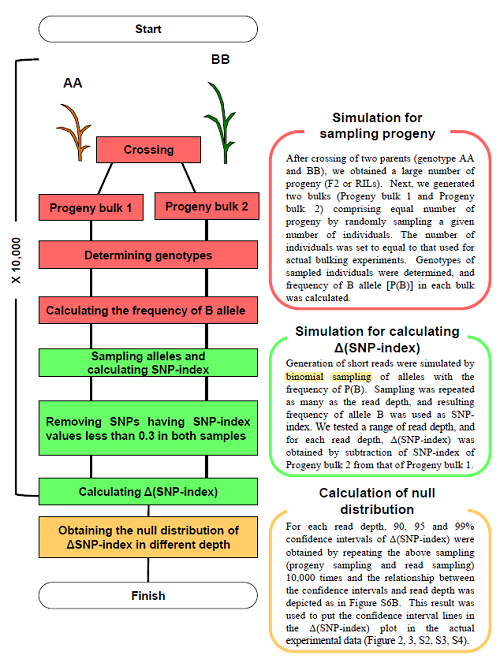
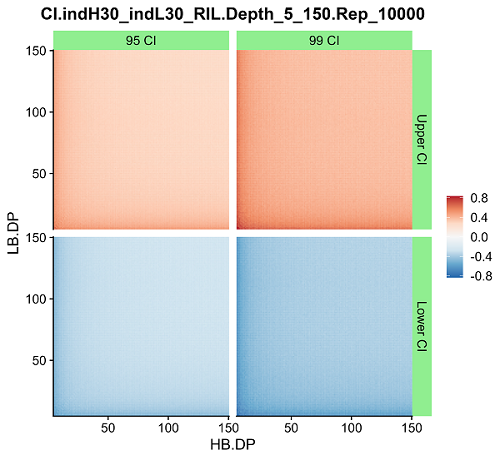

QTL-seq系列 | 如何计算置信区间
书接上文，在计算出 ΔSNP-index 之后如何判断该位点是否存在 QTL？这里通过随机模拟实验来确定 ΔSNP-index 的置信区间（H0: 没有QTL）。

计算原理
模拟取样过程
双亲杂交（AA × BB）、自交后产生包含大量子代个体的分离群体（RIL 或 F2），随机抽取两组若干个体构成两个模拟 bulk pool。对于构成 bulk pool 的每一个个体可能的基因型以及概率是固定的，RIL 群体为 AA:BB = 0.5:0.5，而 F2 群体为 AA:AB:BB = 0.25:0.5:0.25，由此可以计算出给定子代数目的 bulk pool 中的等位基因频率 P(A) 和 P(B)。
模拟计算 ΔSNP-index
前面计算出了 bulk pool 中的等位基因频率，那么在特定测序深度（N）下等位基因 A 出现的次数就相当于进行N次二项分布取样 ，进而可以得到 ，两个 bulk pool 的 SNP index 相减得到 ΔSNP-index。
计算零假设下的 ΔSNP-index 分布
将以上过程重复若干次（10000次）可以得到在零假设下的 ΔSNP-index 的分布，取其上分位数和下分位数可以得到对应置信区间（如 95% 置信区间取上 0.025 分位数和下 0.025 分位数）。
代码实现
模拟计算 ΔSNP-index 置信区间
这里使用 R 语言实现上述过程。
1 | |
ΔSNP-index 置信区间可视化
由此我们得到了特定群体类型、特定样本量大小下，不同测序深度位点的 ΔSNP-index 的 95% 和 99% 的置信区间，把结果导出保存为 RData 文件，方便下次使用而不用重复计算。ΔSNP-index 的置信区间和覆盖深度的关系是怎样的呢？我们通过将上面结果可视化，将横坐标、纵坐标分别表示为 high bulk pool、low bulk pool 的位点覆盖深度，将 ΔSNP-index 的置信区间上限和下限值表示为不同颜色。由下面绘图结果可以看出，当提高位点覆盖深度时，ΔSNP-index 的置信区间范围将会缩小，相反置信区间范围会增大。按照同样的思路我们也可以探究 ΔSNP-index 置信区间和群体类型、每个 pool 取样多少的关系。
1 | |

参考文献